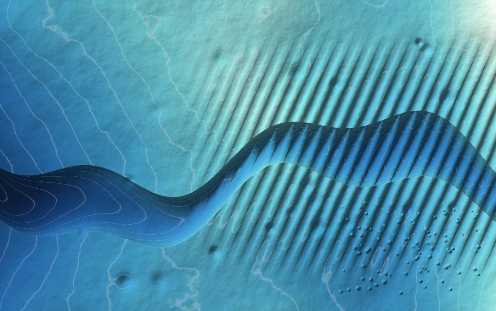

Dati e interpretazione
Marine Geoscience
Progettiamo l'indagine attorno alla decisione che dovrà sostenere, scriviamo le specifiche che il contractor dovrà rispettare, e verifichiamo che il dato consegnato le rispetti davvero.

Tocca il grafico per ingrandirlo
Cosa comprende
Dalla definizione dell'obiettivo dell'indagine fino all'interpretazione integrata dei risultati, con il livello di dettaglio richiesto dalla fase di progetto.
- 01Survey planningDefinizione dell'obiettivo, scelta delle tecniche, geometria di acquisizione, densità delle linee, finestre operative e vincoli meteo-marini. Stima realistica di durata e costo.
- 02Specifiche tecnicheScope of work e requisiti prestazionali: accuratezza di posizionamento, risoluzione, copertura, criteri di accettazione, formati di consegna. Allineamento agli standard di settore applicabili (es. IHO S-44 per la batimetria).
- 03Data review e QCControllo indipendente di completezza, qualità e coerenza: navigazione e posizionamento, calibrazioni, artefatti, tie-line, rispetto delle tolleranze contrattuali.
- 04Data processingElaborazione di dati batimetrici, sonar e sismici: correzioni di posizionamento e marea, rimozione degli artefatti, filtraggio e guadagno, produzione delle griglie e dei volumi consegnabili. Anche riprocessing di dataset esistenti quando il risultato originale non convince.
- 05InterpretazioneMorfologia del fondale, unità e orizzonti sub-superficiali, correlazione con dati geotecnici, identificazione di geohazard e potenziali contatti di interesse.
- 06Integrazione e consegnaModelli di terreno, chart di risultato, ground model condiviso con progettisti e geotecnici, in formati utilizzabili a valle.
Tecniche e dati
Con cosa lavoriamo
Batimetria
Multibeam ed ecoscandaglio singolo, calibrazioni, correzioni di marea, modelli digitali del fondale.
Side scan sonar
Mosaici di backscatter, classificazione dei fondali, individuazione di target e ostacoli.
Sub-bottom profiler
Stratigrafia superficiale, spessore dei sedimenti, orizzonti riflettenti, penetrazione e risoluzione.
UHRS e sismica 2D
Indagini ad altissima risoluzione per progettazione delle fondazioni e valutazione geotecnica integrata.
Magnetometria
Anomalie magnetiche, supporto alle campagne UXO e alla ricerca di infrastrutture sepolte.
Posizionamento e navigazione
Sistemi di posizionamento e USBL, sistemi di riferimento e proiezioni, dati di navigazione in formato standard di settore (es. P1/90, P6).
Quando ci chiamano
Segnali tipici
- →«Non sappiamo se questa indagine ci basta»Prima di andare a gara, per capire se lo scope proposto sostiene davvero la decisione progettuale successiva.
- →«Il contractor dice che il dato è conforme»Serve un giudizio tecnico indipendente prima di accettare la consegna e liberare il pagamento.
- →«Abbiamo dati vecchi, li possiamo riusare?»Valutazione della riutilizzabilità di dataset esistenti e definizione del gap da colmare.
- →«Ci sono anomalie che nessuno sa spiegare»Revisione mirata, riprocessing selettivo e reinterpretazione delle aree critiche.